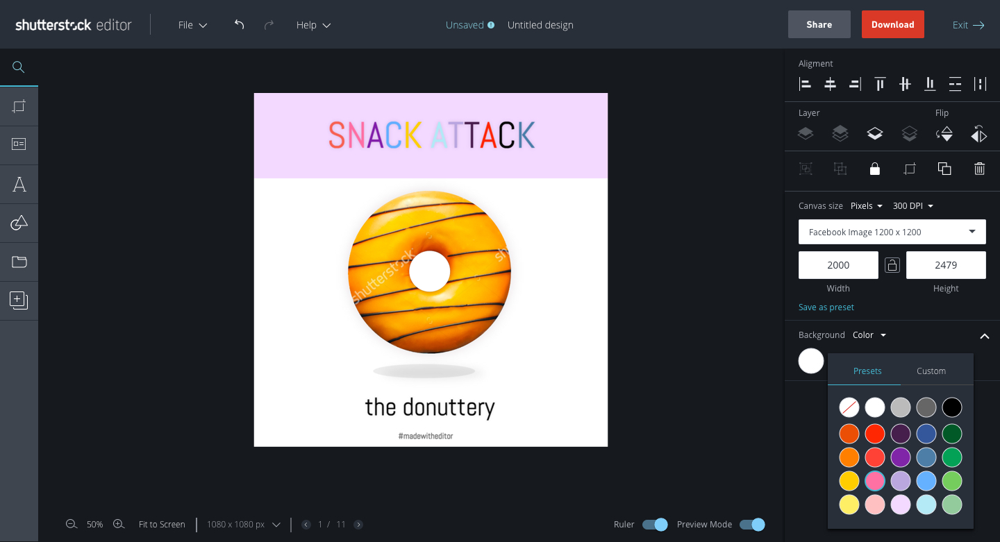

The Skinny
In Feburary of 2016, I joined Shutterstock Editor, a new product group launched as one of the company's first steps into becoming a creative workflow platform. Prior to this development, Shutterstock was mainly a 2-sided marketplace, connecting a global audience of photographers with companies looking for stock assets such as images and videos. Since I had always been interested in the subject of creativity and understanding how it could be more accessible, working on a tools product empowering creativity was a dream come true.

Search and Discovery
One of the projects on which I led a major design, was the search feature in Editor. Prior to this feature, Editor stayed close to its founding roots as a simple editing and simple creation tool. Adding strong search capabilities not only added an additional dimension into the app (being able to be a standalone product), but provided a way for the product to bring measurable value for the company. We researched many existing applications along with the existing search experience in Shutterstock, and designed a prototype that at first, closely matched the Shutterstock search flow. After some initial tests, we observed users wanted more information for each image in the search queue. Additionally, we needed a design that would fit the objectives of key features such as saving and smart search, which were later in the roadmap. On account of these needs along with technical constraints (search APIs), we designed a multi-level left panel for the release so users could search, save, and have access to their Shutterstock assets. While we understood that the key focus of the application (making designing easy and fast) did not necessary fit into the feature requirement of adding a new element on the design canvas, we agreed this would be an interim solution due to meeting roadmap deadlines. [Update] We're working on a redesign for a new search experience

Downloading exploration and concepts
In the previous release, the download path took users through a series of modals. We decided this a negative experience as modals were too small to contain previews of designs to be downloaded. In addition, product wished to add up-sell paths within this flow. With the new design, the download flow enabled a full takeover effect for maximum view-ability and space to add image promotions.

Download: finished design
The solution we came up with for the new download flow required a small rearchitecture of the application. Prior to starting this design, we already had slowly begun to realize we were introducing too many new screens within the single page app's design state, and the logic between the many active states, was slowing down development and confuscating the user experience. Through research, we learned users felt the modals felt too small, and gave users too much access to the design canvas below it. Users revealed to our team, they thought the download state was a separate operation; one in which the design state was irrelevant and out of context. We also learned the primary goal at this state of their design process was to review the design and seeing a large preview was important. Listening to our customers, we moved to simplify the user experience, and introduced a new state to the application, removing unnecessary logic that made the app simpler to use and provided a new state for future features where . In addition, the team could now reuse this new state whenever new features of a similar context is needed.
Share exploration and concepts
In the original design, users shared their designs through a modal dialog that popped up at the center of the screen. When Our share flow feature grew, we needed a way to surface additional steps without keeping the user in the modal state. The modal approach simply could not support the additional steps without feeling awkward. We decided to rethink how the new right panel could be better utilized for this need.

Share: finished design
When we finally decided to test using the right panel for the share state, we observed how users would interact with it. Should the panel persist when users clicked on objects in the design canvas? What should happen when the user clicked off? How does interacting with an object on canvas affect this modeless state? We obsessively tested the design and found users treated this state as an intermediary state of their design process: clicking off should exit the share mode Another issue we ran into was indicating the the correct affordance. Since the panel was accessed with the Share button, we needed a toggle button with an ON/OFF state. Working with the company's platform team, we reviewed our design suggestions and ultimately agreed the buttons with a filled and outlined state, were enough to convey the affordance.